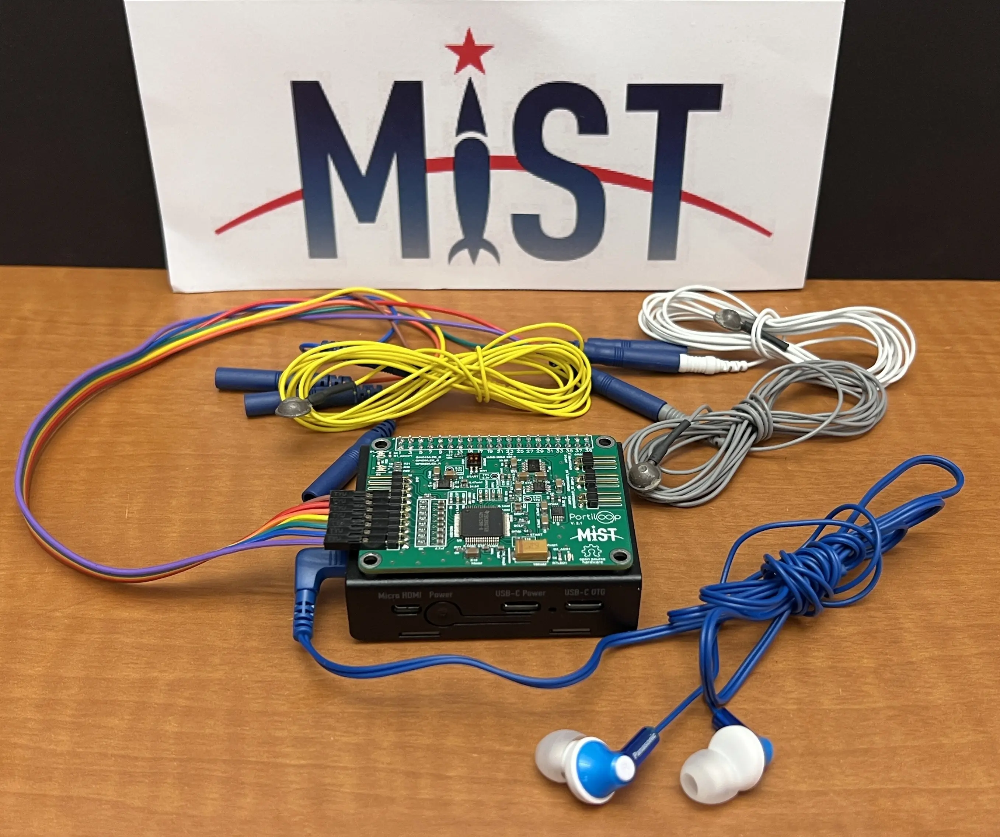
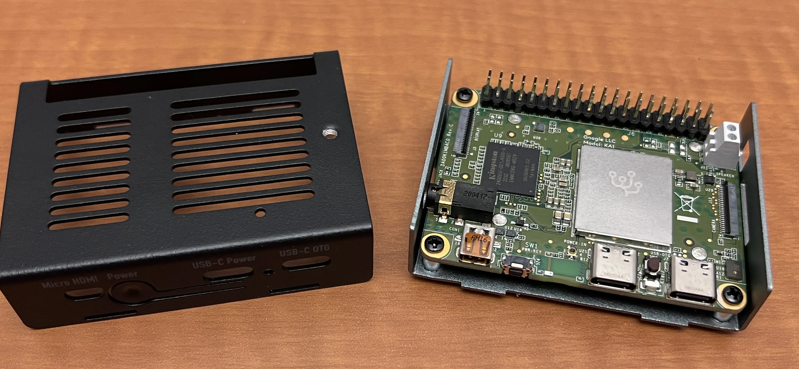
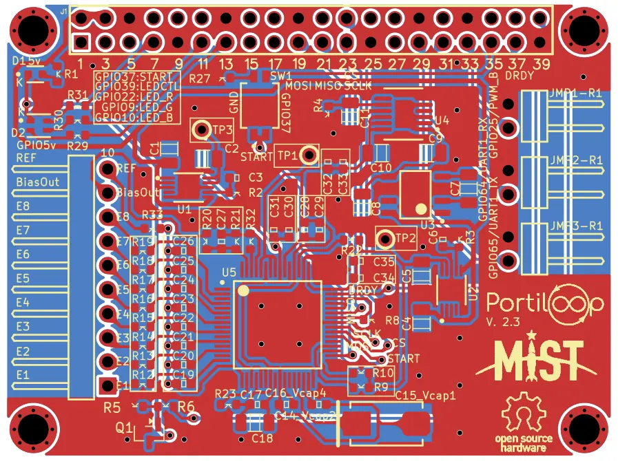

Portiloop v2
Open-source EEG hardware for closed-loop brain stimulation.
Portiloop is an open-source, portable platform developed for electroencephalography acquisition, real-time neural-event detection, and closed-loop stimulation experiments.
My primary contribution focused on the electronic hardware and PCB development of Portiloop v2. I designed versions 2.1 and 2.2 using Altium Designer and developed version 2.3 using KiCad, supporting continued hardware refinement, embedded integration, and openly reproducible development.
My Contributions
My work centered on PCB design, component integration, electrical interfaces, manufacturability, and preparation of the hardware for experimental use.
- Designed the Portiloop v2.1 and v2.2 printed circuit boards using Altium Designer.
- Translated system requirements into schematics, component placement, routing, connectors, and fabrication-ready design files.
- Developed the Portiloop v2.3 board using KiCad.
- Integrated EEG acquisition, embedded processing, power, communication, and external hardware interfaces.
- Considered board dimensions, connector placement, manufacturability, and integration with the processing board.
- Prepared and maintained open-source hardware resources for fabrication, review, and future modification.
- Supported prototype assembly, inspection, integration, and iterative hardware testing.
System Architecture
The platform combines EEG signal acquisition, embedded processing, neural-event detection, experimental control, and stimulation within a portable closed-loop system.
EEG Acquisition
The ADS1299 analog front end digitizes low-amplitude EEG signals and provides the acquisition interface required for downstream processing.
Embedded Processing
The Coral Dev Board Mini provides onboard computation for signal processing, neural-event detection, system control, data recording, and user interaction.
Closed-Loop Operation
Detected EEG events can be used to trigger stimulation with controlled timing, enabling experiments that respond to brain activity in real time.
Hardware Development
Schematic Design
Defined the electrical connections among EEG acquisition, embedded processing, power, communication, stimulation, and external interface components.
PCB Layout
Performed component placement and multilayer routing while considering signal integrity, board dimensions, connectors, manufacturability, and integration with the processing board.
Design Migration
Transitioned the hardware-development workflow from Altium Designer for versions 2.1 and 2.2 to KiCad for version 2.3, supporting greater accessibility within the open-source project.
Prototype and Fabrication Support
Prepared the PCB design resources needed for fabrication, assembly, inspection, integration, and iterative hardware testing.
Publication and Open-Source Resources
Personalizing Brain Stimulation: Continual Learning for Sleep Spindle Detection
Journal of Neural Engineering
Portiloop Hardware
PCB schematics, board layouts, fabrication resources, component models, and hardware documentation.
Portiloop Software
Device software and graphical interfaces for controlling acquisition, real-time detection, stimulation, and EEG recording.
Portiloop Training
Machine-learning resources associated with training the sleep-spindle detector used by the closed-loop system.
Project Gallery
Selected hardware views, PCB revisions, system integration, and operating demonstrations of the Portiloop platform.


